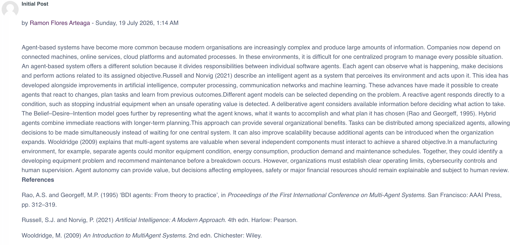
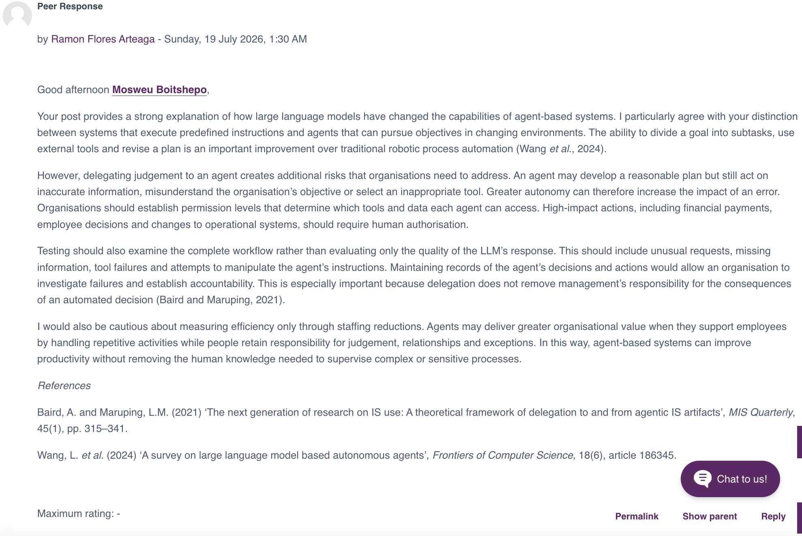
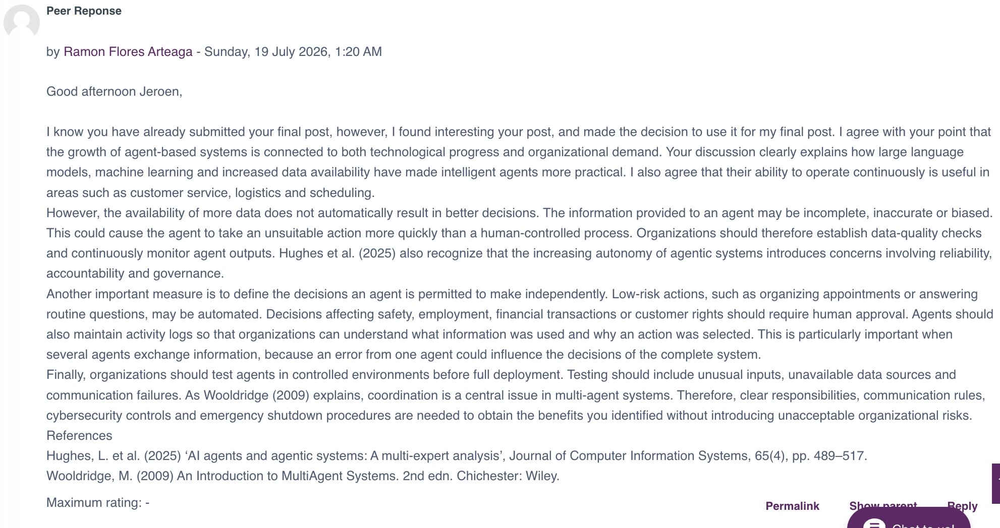
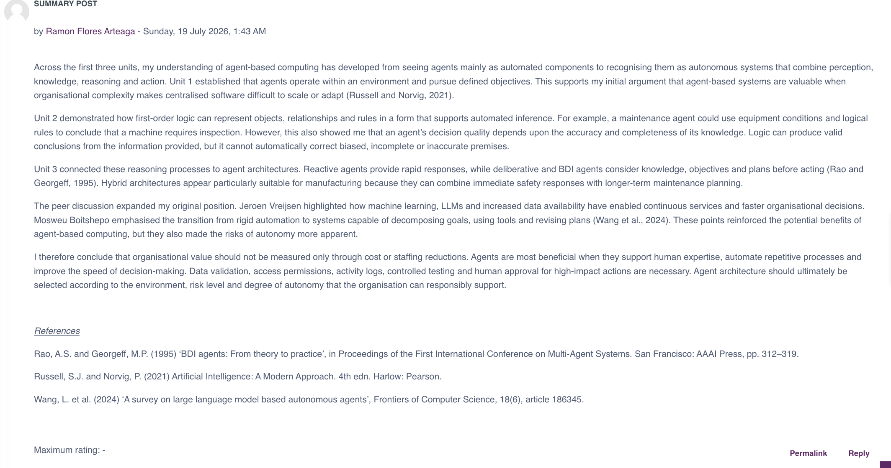
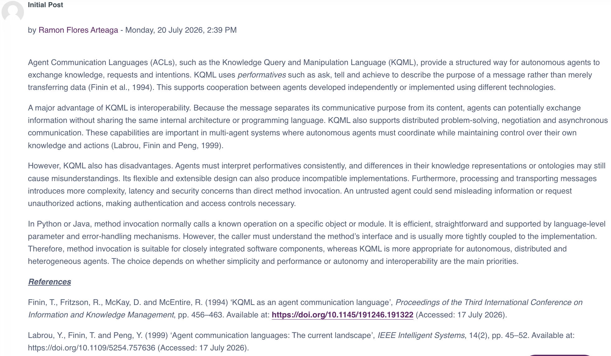
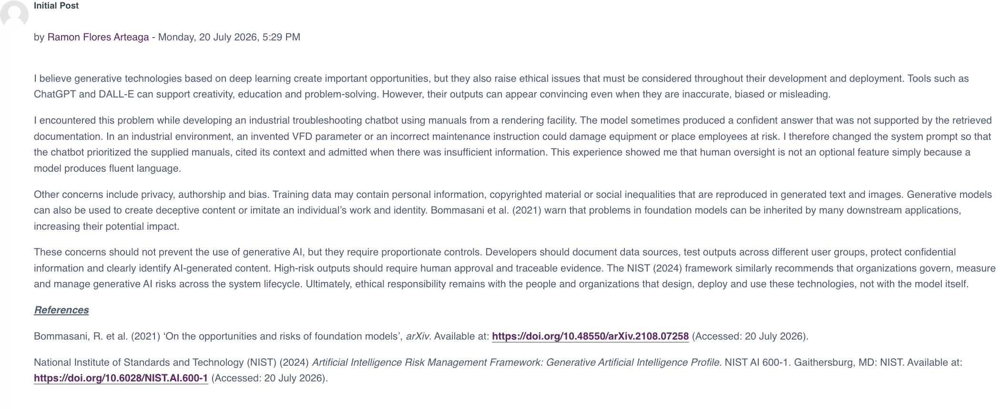
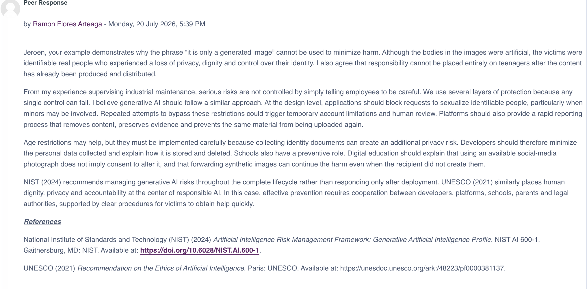
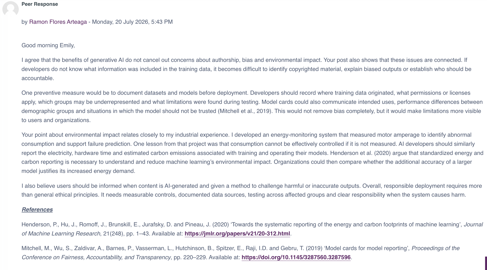
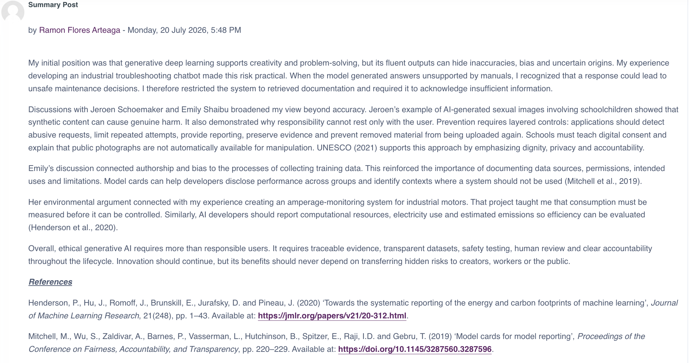

Critical Reflection
Evaluation of my learning, teamwork, individual contribution, ethical considerations and professional development.
Open reflection →Ramon Flores Arteaga · MSc Artificial Intelligence
This e-portfolio documents my academic work, discussions, collaborative activities, technical exercises and final project completed during the Intelligent Agents module of the MSc Artificial Intelligence programme.
Evaluation of my learning, teamwork, individual contribution, ethical considerations and professional development.
Open reflection →Design and implementation of Inquiro, a five-agent academic research and report-generation system.
Open project →Discussion posts, peer responses, exercises and collaborative evidence completed throughout the module.
View evidence →This section presents three formative reflective case studies. Which are based on themes explored during the module and relate directly to my practical work, design decisions, and observations made while developing and testing agent-based systems.
Case #1: Bias in autonomous decision-making.
Case #2: Explainable decisions in agents (XAI)
Case #3: Responsible deployment of agents, including avoiding harmful or unintended emergent behaviours.
Inquiro is an LLM-powered multi-agent academic research system that decomposes a research question, retrieves papers from arXiv, validates results, summarizes and ranks evidence, and produces a structured report. The proposal was developed collaboratively by my team, then I completed the coding, integration, testing, modifications and final documentation individually as an assignment. The team discussions helped define the original four-agent architecture, but individual implementation exposed gaps that were not evident during the proposal stage. I therefore added a fifth agent, the Validator, plus logging, performance measurement, automated testing and controlled error handling. Using Rolfe, Freshwater and Jasper’s (2001) What?–So what?–Now what? framework, I reflect on bias, explainability and responsible deployment.
The Processor Agent used Mistral to summarize papers and assign relevance scores from 0 to 100. Initially, I treated this ranking as a technical output and assumed that papers from an academic database would be assessed objectively. During testing, I recognized that the ranking depended on the query wording, the papers available in arXiv and the model’s interpretation. The apparent precision of a numerical score could therefore conceal uncertainty.
This changed my understanding of bias. I had associated AI bias mainly with unfair decisions involving people, but Inquiro showed me that bias can also emerge through source selection, terminology, database coverage and scoring criteria. A relevant paper could rank lower because it used different language, while a less important paper could score highly because its abstract closely matched the query. Retrieval-Augmented Generation grounds outputs in external evidence (Lewis et al., 2020); however, my testing demonstrated that grounding does not make either retrieval or model judgement neutral. I also realized that my design decisions shaped the outcome. Selecting only arXiv was practical and cost-effective, but it restricted the evidence base. This made me more cautious about presenting the ranking as authoritative and showed me that autonomous decisions must be evaluated across the whole pipeline.
I would retrieve from multiple databases, compare rankings across models and ask human reviewers to assess samples. I would label relevance scores as model-generated recommendations and expose the criteria behind them. This learning applies directly to my industrial work at JBS, where predictive systems may influence maintenance priorities. I would not permit a model score alone to determine a high-risk maintenance decision.
The proposal identified intermediate outputs as support for explainability. In the final system, the Planner generated subtasks, the Processor provided score justifications, and the workflow stored logs and metrics. I also used a deterministic Jinja2 template for the Writer instead of allowing another LLM to rewrite the report. This reduced the risk of unsupported claims and improved consistency.
These features helped me distinguish transparency from explainability. A reasoning trace or justification shows what the system produced, but it does not prove that the reasoning is correct. LLM explanations can sound persuasive despite incomplete evidence. Yao et al. (2023) demonstrate the value of combining reasoning and action, but my implementation showed that observable reasoning still requires verification.
I felt more confident when logs made the workflow visible because errors became easier to trace. However, I also became concerned that users could over-trust fluent explanations. My industrial troubleshooting experience influenced this response. A maintenance diagnosis must be verified against measurements, equipment condition and manuals; plausibility alone is insufficient. The same principle applies to agents.
I would show which abstract passages influenced each score and separate retrieved facts from model interpretation. I would retain deterministic reporting, logs and source links as an audit trail. In future systems, explanations will support human judgement rather than replace it. I now view explainability as a verification mechanism, not merely a presentation feature.
Important changes resulted from failure. During testing, arXiv returned an HTTP 503 error, while Mistral sometimes produced malformed JSON or additional text. I added controlled error handling, JSON extraction, fallback behavior and a Validator Agent to remove duplicate or incomplete records. The final system also completed five automated tests and recorded execution metrics.
These incidents changed my focus from “Can the system complete the task?” to “Can it fail safely and visibly?” Russell and Norvig (2021) describe agents through goal-directed action, but responsible deployment also requires limits on that action. Validation prevented poor-quality data from reaching semantic processing, while graceful degradation prevented an external failure from causing an uncontrolled crash. The teamwork stage also affected me emotionally. I felt disappointed because some members did not appear to contribute ideas or progress consistently. My role as a maintenance superintendent at JBS has trained me to work under pressure, so I remained focused and ensured that the proposal was delivered on time. Nevertheless, I felt that I was carrying more responsibility than expected. My response was to take control rather than establish stronger accountability early. This protected the deadline but limited collaboration. I was also disappointed with the grade because I believed the work demonstrated greater effort and technical quality. Reflecting on this, I recognize that effort must be made visible through documented decisions, contributions and evidence.
In future team projects, I will establish responsibilities, intermediate deadlines and contribution records from the beginning. For agent deployment, I will include validation, testing, logging, human approval and recovery behavior in the initial architecture. Wooldridge (2009) emphasizes defined agent responsibilities; I now understand that human responsibilities must be equally explicit.
Inquiro developed my technical skills in LangGraph orchestration, local LLM integration, validation, testing, error handling and deterministic reporting. More importantly, it changed how I evaluate intelligent agents. I now examine bias across the entire pipeline, treat explanations as evidence that requires verification, and design systems for safe failure, transparency and human oversight. The project also revealed a weakness in my teamwork behavior: under pressure, I tend to assume control rather than delegate. In the future, I will combine technical ownership with clearer responsibilities, earlier communication, documented contributions and stronger collaboration, while applying these lessons to academic projects and industrial AI systems.
Lewis, P., Perez, E., Piktus, A., Petroni, F., Karpukhin, V., Goyal, N., Küttler, H., Lewis, M., Yih, W.T., Rocktäschel, T., Riedel, S. and Kiela, D. (2020) Retrieval-Augmented Generation for knowledge-intensive NLP tasks. Advances in Neural Information Processing Systems, 33, pp. 9459–9474.
Rolfe, G., Freshwater, D. and Jasper, M. (2001). Critical Reflection in Nursing and the Helping Professions: A User's Guide. Basingstoke: Palgrave Macmillan.
Russell, S.J. and Norvig, P. (2021). Artificial Intelligence: A Modern Approach. 4th ed. Harlow: Pearson.
Wooldridge, M. (2009). An Introduction to MultiAgent Systems. 2nd ed. Chichester: John Wiley & Sons.
Yao, S., Zhao, J., Yu, D., Du, N., Shafran, I., Narasimhan, K. and Cao, Y. (2023). ReAct: Synergizing reasoning and acting in language models. International Conference on Learning Representations.
Inquiro is an LLM-powered multi-agent system designed to support academic research, analysis, validation and structured report generation.
This section presents the original proposal for Inquiro, an LLM-powered multi-agent academic research system developed as part of the Artificial Intelligence Agents module. The proposal describes the initial architecture, design decisions, development methodology, and technology stack that guided the implementation of the final system.
Inquiro is a proposed LLM-powered multi-agent system designed to support academic research. The system decomposes research questions into manageable subtasks, retrieves relevant literature, processes research findings, and generates structured offline reports.
Rather than relying on a single monolithic AI model, the proposal introduces multiple specialised agents coordinated through LangGraph. This architecture improves modularity, transparency, maintainability, and simplifies future system expansion.
The proposal is based on established research in intelligent agents, multi-agent systems and Retrieval-Augmented Generation (RAG).
These concepts formed the theoretical foundation of the proposed Inquiro architecture.
Several architectural decisions were made during the proposal phase to maximize modularity, maintainability and reproducibility.
LangGraph was selected because it provides explicit state management, deterministic workflows and simplifies communication between independent agents.
A four-agent architecture was selected instead of a single-agent solution. Separating responsibilities between specialised agents simplifies testing, maintenance and future scalability.
Mistral-7B was proposed as the primary language model due to its open-source availability, strong instruction-following capabilities and ability to run locally through Ollama.
The arXiv repository was selected as the primary academic knowledge source because it provides high-quality scientific literature without subscription fees.
Instead of generating reports entirely through LLM responses, deterministic Jinja2 templates were proposed to improve consistency, repeatability and reproducibility of generated reports.
The proposed architecture consists of four specialised agents coordinated through a shared LangGraph state object.
All agents communicate exclusively through a shared LangGraph state object, allowing deterministic workflow execution while maintaining loose coupling between system components.
The proposed Inquiro architecture was designed around four specialised agents coordinated through a LangGraph orchestrator. Each agent performs a single responsibility while sharing information through a common state object, allowing deterministic execution and modular system expansion.
The overall workflow follows this sequence:
The proposed architecture follows a layered approach beginning with the user interface, continuing through the LangGraph orchestration layer, then the Planner, Retriever, Processor and Writer agents before finally storing the generated report locally.
Insert Figure 1 (System Architecture Diagram) here.
The project was planned across four development weeks, with each stage focused on a specific milestone and set of deliverables.
| Week | Milestone | Key Deliverables |
|---|---|---|
| Week 1 | Setup and Design | Roles assigned, Git repository created, shared state schema agreed, five test queries defined, and the selected LLM confirmed as operational. |
| Week 2 | Agent Development | Planner and Retriever Agents implemented and unit-tested independently. arXiv results were confirmed for three test queries. |
| Week 3 | Integration and Processor Development | The complete pipeline was connected through LangGraph. The Processor Agent performed summarisation and ranking, while the Writer Agent generated and stored report.md. |
| Week 4 | Evaluation and Reporting | Five test queries were executed and logged. The Streamlit interface was added, and the written report and demonstration were prepared for submission. |
The proposed system was intended to be evaluated using predefined research questions of varying complexity.
The evaluation metrics included:
Independent evaluation by multiple team members was proposed to reduce individual bias. Success would be measured against the assignment criteria, including data retrieval, data processing and offline storage of usable outputs.
This proposal outlined the design of Inquiro, an LLM-powered multi-agent system intended to support academic research and information gathering. The proposed solution used a Planner Agent, Retriever Agent, Processor Agent and Writer Agent working together to decompose research questions, retrieve relevant information, process findings and generate structured reports.
The design was developed using concepts studied throughout the module, including intelligent agents, task decomposition and agent collaboration. A multi-agent approach was selected because it separates complex research tasks into smaller, more manageable components, making the system easier to understand, test and develop.
The proposed technology stack relied on freely available tools such as LangGraph, Hugging Face, Ollama and the arXiv API, making the solution practical to implement within the scope of the project.
Although challenges related to retrieval accuracy, explainability and source quality remained, appropriate mitigation strategies were identified as part of the design.
Overall, the proposal demonstrated how agent-based approaches and Large Language Models could be combined to support academic research tasks in a structured and practical way.
Wooldridge, M. (2009) An Introduction to MultiAgent Systems. John Wiley & Sons.
Lewis, P., Perez, E., Piktus, A., Petroni, F., Karpukhin, V., Goyal, N., Küttler, H., Lewis, M., Yih, W.T., Rocktäschel, T. and Riedel, S. (2020) ‘Retrieval-augmented generation for knowledge-intensive NLP tasks’, Advances in Neural Information Processing Systems, 33, pp. 9459–9474.
Yao, S., Zhao, J., Yu, D., Du, N., Shafran, I., Narasimhan, K. and Cao, Y. (2022) ‘ReAct: Synergizing reasoning and acting in language models’, arXiv preprint, arXiv:2210.03629.
Zhu, Y., Liu, L., Yu, J. and Zhang, D. (2026) ‘LLM-Based Multi-Agent Orchestration: A Survey of Frameworks, Communication Protocols, and Emerging Patterns’.
The sequence diagram illustrates the communication flow between the user, LangGraph orchestrator and each specialised agent throughout the research pipeline.
The workflow demonstrates how responsibilities are delegated sequentially, allowing each agent to complete an independent task before passing structured data to the next stage.
Insert Figure 2 (Sequence Diagram) here.
| Execution Layer | Component | Primary Responsibility |
|---|---|---|
| User Interface | Streamlit / CLI | Accepts research queries and presents generated reports. |
| Orchestration | LangGraph | Maintains workflow state, validates data and coordinates agent execution. |
| Planning | Planner Agent | Transforms complex research questions into structured subtasks. |
| Retrieval | Retriever Agent | Retrieves academic papers using external APIs. |
| Processing | Processor Agent | Ranks, summarizes and filters retrieved information. |
| Document Generation | Writer Agent | Produces deterministic Markdown reports. |
| Storage | Local File System | Stores generated reports and historical JSON cache. |
To avoid deployment restrictions, the proposed solution relied entirely on open-source software and freely available development tools.
| Technology | Purpose |
|---|---|
| Python 3.11+ | Main programming language. |
| LangGraph | State management and workflow orchestration. |
| OpenAI Compatible API | Cloud-based language model. |
| Ollama | Local execution of open-source LLMs. |
| LangChain | Unified interface for Large Language Models. |
| arXiv API | Academic paper retrieval. |
| DuckDuckGo Search | Optional non-academic web search. |
| httpx | HTTP communication with external APIs. |
| Jinja2 | Template-based report generation. |
| Streamlit | Graphical user interface. |
| pathlib | Local report storage. |
| difflib | Duplicate paper detection. |
The proposal defined a shared state object used by every agent throughout the workflow. Each processing stage updated the shared state before transferring control to the next agent.
class InquiroState(TypedDict):
query: str
subtasks: List[str]
raw_results: List[Dict]
ranked_findings: List[Dict]
report_path: str
This centralized state design enables deterministic execution while keeping individual agents independent from one another.
Defines the research plan and task sequence.
Collects and organises relevant information.
Evaluates evidence and identifies key findings.
Checks quality, structure and consistency.
Generates the final structured academic report.
Although the final implementation of Inquiro was completed individually, the project began as a collaborative proposal developed by Team C. Throughout the planning phase, regular meetings were held to discuss the project scope, define the architecture, assign responsibilities and review design decisions.
During the proposal stage, responsibilities were distributed among team members to ensure that every aspect of the system design was covered. Contributions included:
For the final implementation, I independently transformed the original proposal into a fully functional application. While preserving the original vision of the project, I expanded the architecture and implemented additional features that significantly improved reliability and maintainability.
Working as part of a multidisciplinary team highlighted the importance of communication, planning and shared decision-making during the proposal stage. Although the final software implementation was completed individually, the initial collaboration helped establish a clear project vision and a solid architectural foundation. The experience reinforced the value of combining collective planning with independent technical execution to successfully deliver a complex AI system.
The initial concept and architecture were developed collectively by the project team.
Open proposal →I contributed to planning and later completed the coding, testing, modification and documentation of the final implementation.
The experience highlighted the importance of participation, accountability, communication and clearly defined responsibilities.
Discussion posts and peer responses completed during the module.
Introduction to Agent-Based Computing. Collaborative Discussion 1: Agent Based Systems.
View discussion →Introduction to Agent-Based Computing. Collaborative Discussion 1: Agent Based Systems.
View response →Introduction to Agent-Based Computing. Collaborative Discussion 1: Agent Based Systems.
View response →Summary of the initial post and peer responses.
View summary →Collaborative Discussion 2: Agent Communication Languages.
View discussion →Agent Communication Collaborative Discussion 2: Agent Communication Languages
View response →Agent Communication Collaborative Discussion 2: Agent Communication Languages
View response →Summary of the initial post and peer responses.
View summary →Collaborative Discussion 3: Deep Learning.
View discussion →Introduction to Adaptive Algorithms. Collaborative Discussion 3: Deep Learning.
View response →Introduction to Adaptive Algorithms. Collaborative Discussion 3: Deep Learning.
View response →Summary of the initial post and peer responses.
View summary →Unit 1: Initial Post — Introduction to Agent-Based Computing.

Unit 1: Peer Response #1.

Unit 1: Peer Response #2.

Unit 1: Summary Post.

Unit 5: Agent Communication.

Unit 9: Introduction to Adaptive Algorithms.

Unit 9: Peer Response #1.

Unit 9: Peer Response #2.

Unit 9: Summary Post.

Practical exercises, technical activities and supporting module evidence.
Analysis and comparison of reactive, deliberative, BDI and hybrid agent architectures.
Open evidence →Exercises involving predicates, logical representation and reasoning.
Open evidence →Code, testing evidence and technical development completed during the project.
View code →Implmentation of Inquiro: Inquiro is an LLM-powered multi-agent system designed to support academic research, analysis, validation and structured report generation.
This section presents the final implemented version of Inquiro v2, an LLM-powered multi-agent academic research planning system developed for the MSc Artificial Intelligence module on Intelligent Agents.
Unlike the original proposal, the final implementation includes five specialised agents, automated testing, data validation, performance metrics, execution logging and controlled error handling.
Inquiro is an LLM-powered multi-agent academic research system developed for the MSc Artificial Intelligence module on Intelligent Agents.
The purpose of the application is to demonstrate how a Large Language Model can operate as part of an autonomous planning workflow rather than as a conventional chatbot.
The system receives an academic research goal, decomposes it into a sequence of tasks, retrieves relevant academic literature, validates and processes the retrieved information, and produces a structured Markdown report.
The application demonstrates:
Inquiro uses five specialised agents coordinated through LangGraph. Each agent has a clearly defined responsibility within the academic research workflow.
User Research Goal
|
v
Planner Agent
|
v
Retriever Agent
|
v
Validator Agent
|
v
Processor Agent
|
v
Writer Agent
|
v
Structured Markdown Report
The agents communicate through a shared LangGraph state object.
The shared state stores:
The Planner Agent receives the research question and creates a structured execution plan.
It produces:
The Planner Agent does not answer the research question directly. This design demonstrates planning behaviour and improves transparency.
The Retriever Agent searches the arXiv academic repository.
It retrieves:
The Retriever Agent also checks whether the user query appears to be an academic research question before sending it to arXiv.
The Validator Agent performs data-quality checks before semantic processing.
It:
The Validator Agent was added during development as an improvement over the original four-agent proposal.
The Processor Agent uses the local Mistral model to analyse retrieved papers.
It generates:
All papers are processed in a single LLM request to reduce execution time and improve ranking consistency.
The Writer Agent generates the final Markdown report.
It uses a deterministic Jinja2 template instead of asking the LLM to write the complete report.
This design improves:
The Writer Agent does not introduce new claims. It assembles the information produced by previous agents.
| Technology | Purpose |
|---|---|
| Python 3.13 | Main programming language. |
| LangGraph 1.2.8 | Multi-agent workflow orchestration. |
| Ollama 0.24.0 | Local LLM execution environment. |
| Mistral | Local Large Language Model. |
| arXiv Python Client | Academic paper retrieval. |
| Jinja2 | Deterministic report generation. |
| PyTest | Unit and integration testing. |
| Python Logging | Execution evidence and debugging. |
| JSON | Execution summaries and workflow metrics. |
The default execution model is:
mistral:latestThe model runs locally through Ollama.
Local execution was selected because it:
The system also contains an LLM routing layer that can later support OpenAI.
The active provider is controlled in config.py.
Current configuration:
USE_LOCAL_MODEL = True
LOCAL_MODEL_NAME = "mistral:latest"OpenAI execution is not currently enabled because no API credits were available during development.
The project follows a modular architecture where each agent is implemented as an independent component. Supporting utilities, templates, tests and generated reports are organized into separate directories to improve maintainability and scalability.
inquiro/
├── agents/
│ ├── planner.py
│ ├── retriever.py
│ ├── validator.py
│ ├── processor.py
│ └── writer.py
│
├── llm/
│ └── llm_router.py
│
├── utils/
│ ├── logger.py
│ ├── json_parser.py
│ └── timer.py
│
├── templates/
│ └── report_template.md
│
├── tests/
│ ├── test_pipeline.py
│ ├── test_planner.py
│ ├── test_retriever.py
│ ├── test_validator.py
│ └── test_processor.py
│
├── reports/
│ ├── report.md
│ ├── execution_summary.json
│ └── workflow_metrics.json
│
├── logs/
│ └── execution.log
│
├── config.py
├── state.py
├── main.py
├── requirements.txt
├── pytest.ini
└── README.md
The application was developed and tested using the following software environment:
An internet connection is required only for retrieving academic papers from arXiv. All Large Language Model inference executes locally through Ollama.
Navigate to the folder containing the project.
cd "/Users/username/path/to/inquiro"
Create a virtual environment:
python -m venv venv
Activate the environment on macOS or Linux:
source venv/bin/activate
Activate the environment on Windows:
venv\Scripts\activate
After activation, the terminal should display the virtual environment name.
(venv)
pip install -r requirements.txt
Main dependencies include:
Download and install Ollama using the official installer for your operating system.
ollama pull mistral
Verify that the model is installed:
ollama list
The output should include:
mistral:latest
ollama ps
If the server is not running:
ollama serve
On macOS, Ollama may already be running as a background service. If so, the message below indicates that no additional action is required:
bind: address already in use
From the project root directory, execute:
python main.py
The application displays:
Inquiro v2.0
LLM-Powered Multi-Agent Academic Research Planning System
Enter an academic research question.
Example query:
Applications of artificial intelligence in predictive maintenance
After pressing Enter, the workflow executes sequentially:
During successful execution, the terminal displays progress messages for each agent in the workflow.
Planner Agent started.
Planner Agent completed.
Retriever Agent started.
5 papers retrieved from arXiv.
Retriever Agent completed.
Validator Agent started.
Validation complete.
5 valid papers.
Processor Agent started.
Processor Agent completed.
Writer Agent started.
Report successfully written.
Workflow completed successfully.
The final output also displays:
After a successful execution, Inquiro automatically generates several output files that document the research results, workflow execution and performance metrics.
reports/report.md
The primary application output contains:
reports/execution_summary.json
reports/workflow_metrics.json
{
"planner_time":10.251,
"retriever_time":1.204,
"validator_time":0.001,
"processor_time":30.015,
"writer_time":0.005,
"total_runtime":41.539
}
logs/execution.log
The execution log records agent execution, Ollama requests, retrieval results, errors, report generation events and total workflow execution time, providing complete traceability for debugging and validation.
The project includes automated unit and integration tests implemented with PyTest.
Run the complete test suite using:
pytest
or
python -m pytest
The final implementation successfully passed all automated tests.
5 passed
The automated tests include:
The final functional validation used the following research query:
Applications of artificial intelligence in predictive maintenance
Execution results:
Generated artifacts:
During testing, the arXiv service returned an HTTP 503 error. Instead of terminating unexpectedly, the workflow:
This demonstrates graceful degradation rather than an uncontrolled application failure.
Since Mistral may occasionally return malformed JSON or Markdown code fences, the application includes a dedicated JSON extraction utility that:
Both the Planner and Processor Agents also include fallback behaviour when structured output cannot be parsed.
The Retriever Agent validates whether a query is suitable for academic retrieval before contacting arXiv, preventing unnecessary API requests and reducing execution time.
The original proposal described a four-agent architecture:
The final implementation expanded the architecture to five agents:
The Validator Agent was introduced to improve data quality by removing duplicate or malformed records before semantic processing.
Additional implementation improvements include:
The implementation was informed by research on intelligent agents, multi-agent systems, Retrieval-Augmented Generation (RAG), ReAct reasoning, software architecture and software testing.
Primary references include:
arXiv (2026). arXiv API User Manual.
Jinja (2026). Jinja Documentation.
LangChain (2026). LangGraph Documentation.
Lewis, P. et al. (2020). Retrieval-Augmented Generation for Knowledge-Intensive NLP Tasks.
Ollama (2026). Ollama Documentation.
Python Software Foundation (2026). Python 3 Documentation.
PyTest (2026). PyTest Documentation.
Russell, S. & Norvig, P. (2021). Artificial Intelligence: A Modern Approach (4th ed.).
Wooldridge, M. (2009). An Introduction to MultiAgent Systems (2nd ed.).
Yao, S. et al. (2023). ReAct: Synergizing Reasoning and Acting in Language Models.
Welcome to my professional portfolio. I am a Mechatronics Engineer currently pursuing a Master of Science in Artificial Intelligence at the University of Essex. My professional background combines industrial maintenance, automation, artificial intelligence, project management and software development within multinational companies.
I am a person who takes risks to achieve more, with great initiative, adaptability to change and strong teamwork skills. Despite adversity, I remain focused on achieving objectives while helping the entire team reach its goals.
Phone: 231-286-9191
Email: rammarteaga@gmail.com
LinkedIn: Ramón Flores Arteaga
Maintenance Supervisor / Engineering
September 2024 – Present
Maintenance Supervisor & Preventive Maintenance
January 2023 – July 2024
Global Plant & Fleet Project Manager
August 2022 – January 2023
Global Plant & Fleet Maintenance Supervisor
April 2022 – January 2023
Software Tools Developer
January 2022 – June 2022
Engineering Project Manager
November 2021 – January 2022
Help Desk Support Specialist
August 2020 – August 2021
Master of Science (MSc) in Artificial Intelligence
June 2025 – Present
Currently pursuing a Master of Science in Artificial Intelligence, specializing in intelligent agents, machine learning, large language models, explainable AI, responsible AI, and autonomous systems.
Bachelor of Science in Mechatronics Engineering
January 2016 – August 2021
Studied mechanical design, industrial automation, robotics, control systems, electronics, embedded systems, PLC programming and industrial manufacturing processes.
International Engineering Program
June 2019 – January 2020
Diploma in Computer Science and Programming Using Python
August 2021 – January 2022
Completed advanced programming coursework focused on Python, software development and computational problem solving.